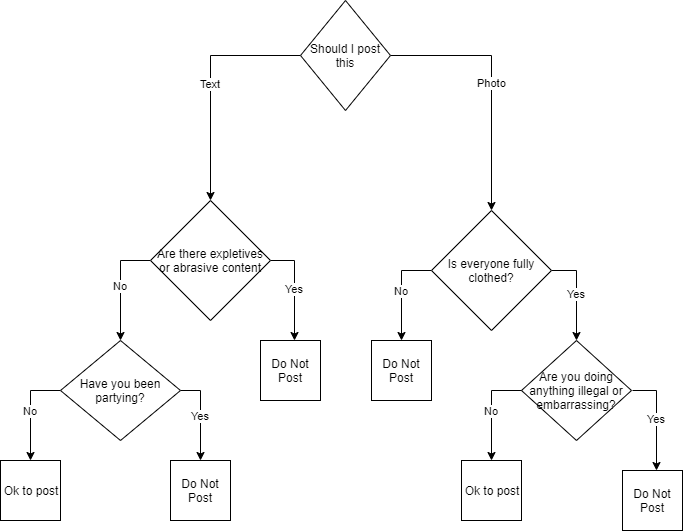

Decision Trees
Key Ideas
If Statements Switch Statements String Functions
Readings
https://books.trinket.io/thinkjava2/chapter5.html
https://www.geeksforgeeks.org/decision-making-javaif-else-switch-break-continue-jump/?ref=lbp
Observations
Definition
The is statement has the following form:
if(condition){
}
if(condition)
{
// runs if true
}
if(condition)
{
// code here runs if true
}
else
{
// code here runs if false
}
if(condition)
{
// code here runs if true
}
else if(condition)
{
// code here runs if true
}
else if(condition)
{
// code here runs if true
}
else
{
// code here runs if false
// the else is optional
}
Warning
In order to compare Strings, you must use .equal(argument)
String string1 = "aaa";
String string2 = "bbb";
if (string1.equals(string2))
{
// Do something
}
Tip
Note in the code below how a string is converted to an integer - Integer.parseInt() and to a double Double.parseDouble()
Lecture Code
//James Goudy
//If demo
import java.util.Scanner;
public class If_Demo {
static void if_one(double num) {
//Example is checking for true only
System.out.println("Example 1 \n");
if (num < 100) {
System.out.println(num + " is less than 100 \n");
}
}
static void if_two(double num) {
//This example is checking for both true and false
System.out.println("Example 2 \n");
if (num < 100) {
System.out.println(num + " is less than 100 \n");
} else {
System.out.println(num + " is greater than 100 \n");
}
}
static void if_three(double num) {
//This example is an example of an else if statement
System.out.println("Example 3 \n");
if (num < 10) {
System.out.println(num + " is less than 10 \n");
} else if (num < 20) {
System.out.println(num + " is less than 20 \n");
} else if (num <= 30) {
System.out.println(num + " is less than 30 \n");
} else {
System.out.println(num + " is greater than 30 \n");
}
}
static void if_range(double salary) {
//check to see if a number is within a range of numbers
System.out.println("Example Range of Numbers \n");
if (salary > 0 && salary <= 50000) {
System.out.println(" You are poor \n");
} else if (salary > 50000 && salary <= 200000) {
System.out.println(" You are middle class \n");
} else {
System.out.println(" You are rich \n");
}
}
static void if_string(String vehicle) {
//you should always convert your comparasion to
//a consistent state. Comparisons for strings are
//case sensitive.
vehicle = vehicle.toLowerCase();
//String is an object so Java requres
//the .equals to compare the equality of
//strings. In other language you may
// be able to use the ==
if (vehicle.equals("boat")) {
System.out.println("You are a boater \n");
} else if (vehicle.equals("car")) {
System.out.println("You are a driver \n");
} else if (vehicle.equals("plane")) {
System.out.println("You are a pilot \n");
} else {
System.out.println("That wasn't a choice \n");
}
}
public static void main(String[] args) {
//variables
double num1 = 0;
double mySalary = 0;
String myVehicle;
//create scanner
Scanner sc1 = new Scanner(System.in);
//input number
System.out.println("Enter a number");
num1 = Integer.ParseInt(sc1.nextLine());
//if example one
// if the number is less than 100 the message will appear
System.out.println("If Example - checking for true only\n");
if_one(num1);
//if example two
//this example for both a true and false condition
System.out.println("If Example Two - "
+ "checking for a both true and false\n");
if_two(num1);
//if example three
//this example an else if example
System.out.println("Else if example - "
+ "checking for multiple conditions \n");
if_three(num1);
//if example - check for a number within a range
System.out.println("Checkin to see if a number is within a range\n");
System.out.println("Enter your salary\n");
mySalary = Double.ParseDouble(sc1.nextLine());
if_range(mySalary);
//An example using a string
System.out.println("This is an example of comparing strings \n");
System.out.println("Please enter your favorite "
+ "vehicle - boat, car, plane \n");
sc1.nextLine();
myVehicle = sc1.nextLine();
if_string(myVehicle);
//exit program
System.out.println("Press enter to exit \n");
sc1.nextLine();
}
}
In Class
Post This Exercise

End Of Topic